Tabla de contenido
Introducción …………………………………………………………………………............2
Pasos 1: Acceder al sistema.
Registro de un nuevo usuario……………………………………………….......3
Paso 2: Ingresar al sistema ………………………………………………………....6
Paso 3: Enviar un artículo………………………………………………………….....8
Paso 4: Listar los Artículos ………………………………………………………. 11
Paso 5: Cerrar sesión …………………………………………………………….......12
Introducción.
Por petición del director de la revistar Vector la cual se enfoca en difundir las actividades docentes,
científicas y tecnológicas presentadas por la comunidad ingenieril. La Facultad de Ingeniería de la Universidad
de Caldas presenta un desarrollo de un sistema de información en ambiente web que permite administrar las
diferentes solicitudes que hacen los investigadores nacionales e internacionales.
Presentado así un sistema de información que permita registrar, almacenar y difundir todo el contenido
de la comunidad académica.
Paso 1: Acceder al Sistema
Registro de un nuevo usuario.
Para ser parte de la comunidad, poder observar y descargar todo el contenido académico es necesario registrarse
y crear un perfil de usuario que nos permita navegar por el contenido del sistema de información de manera óptima
y adecuada.
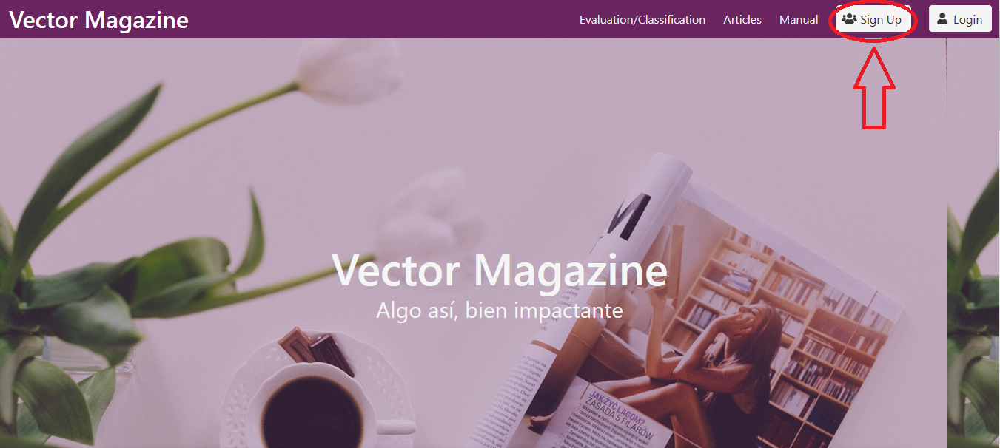
Se observa la página principal la cual presenta las opciones de ingreso al sistema. Inicialmente se observa
la opción de registro “Sign Up”, que permitirá crear un nuevo perfil de usuario.
Al ingresar en la opción “Sign Up” el sistema requiere información personal al que define el rol que manejara el
nuevo usuario en el sistema de información. Se deberá ingresar los datos de manera adecuada y sin omitir ningún campo.
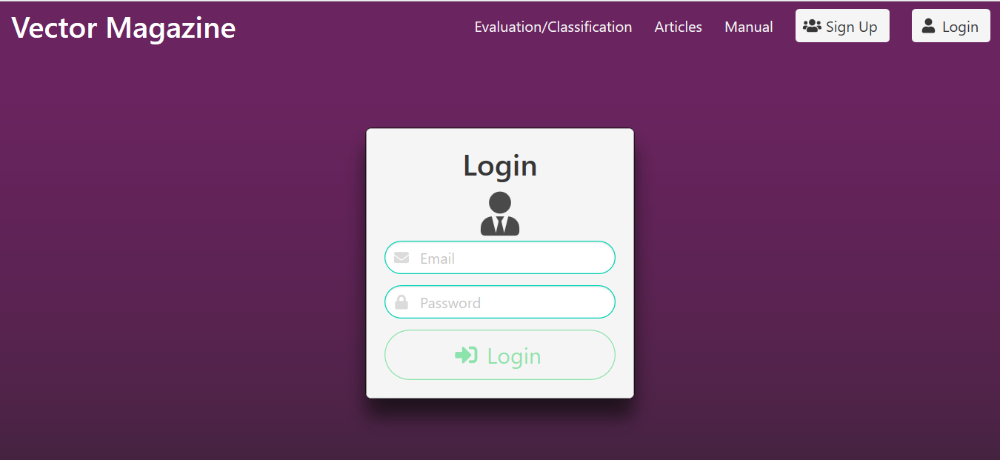
Al tener todo el formulario debidamente diligenciado, se procese a validar el registro que permite crear el nuevo
perfil de usuario.
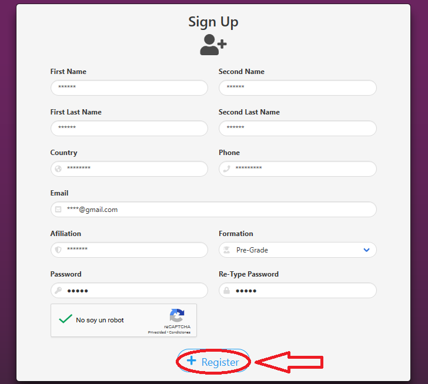
Paso 2: Ingresar al sistema
Una vez finalizado el registro de debe ingresar en la opción de “Login”.
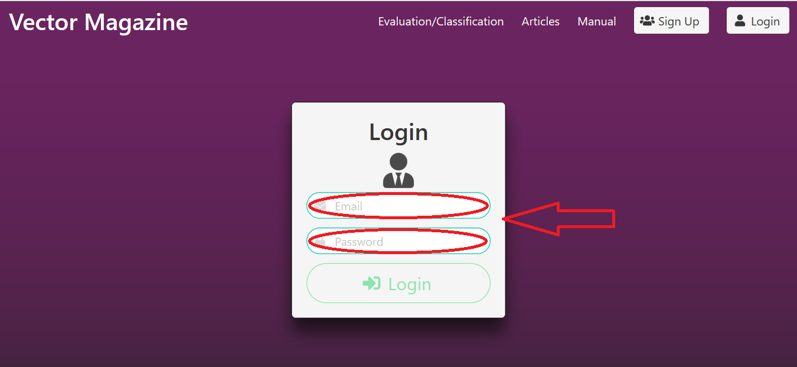
Ya con los datos aportados previamente en el registro, se procede a acceder
al sistema con el Email y Contraseña personales creadas al inicio del proceso
del registro.
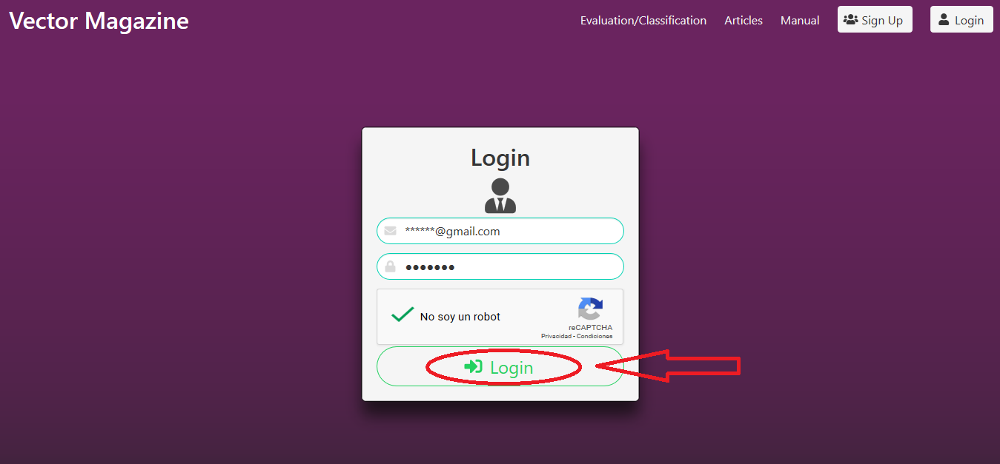
Al tener los datos validados adecuadamente se ingresa al sistema, el cual permitirá
el acceso necesario para visualizar todo el contenido que el sistema de información
y la comunidad de académica tiene para ofrecer.
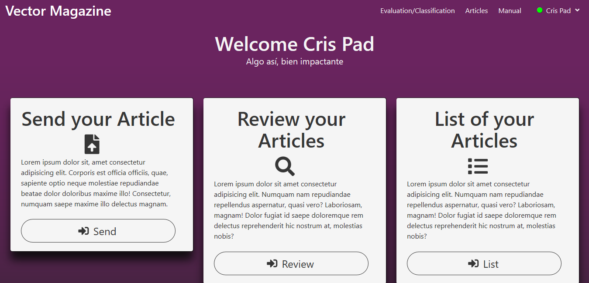
Paso 3: Enviar un artículo.
Al encontrarse dentro del sistemas se posee un rol de autor, el cual permite enviar los
archivos para ser evaluados por la comunidad adámica y saber si es adecuado para pertenecer
al sistema.
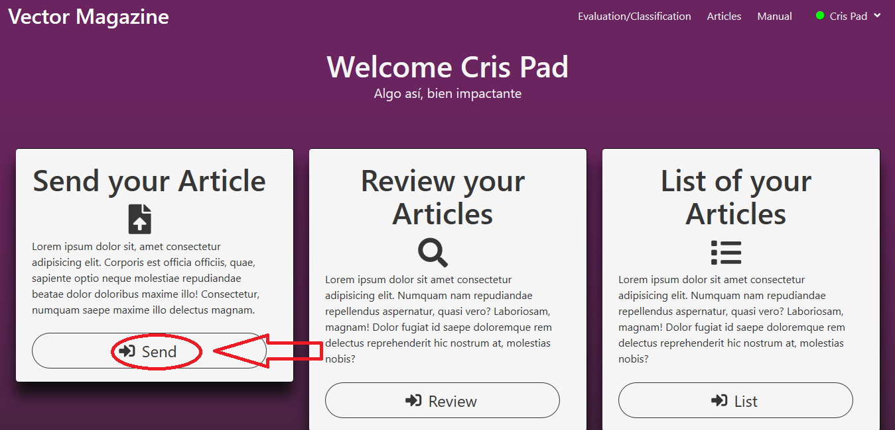
Para enviar un artículo se elige la opción de “Send”, que permitirá al usuario en calidad
de autor enviar su propuesta de articulo hacia la comunidad académica.
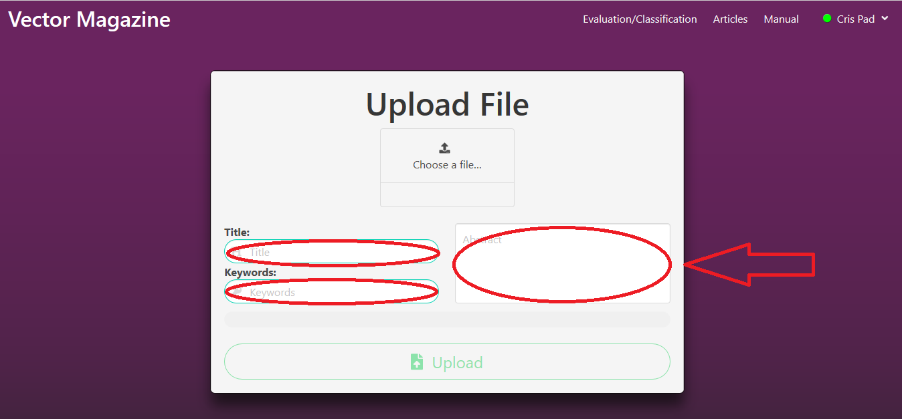
Se requiere ingresar el título, palabras claves y abstract del artículo que se desea enviar
al sistema, una vez diligenciado estos campos, se procede a cargar el archivo en formato PDF.
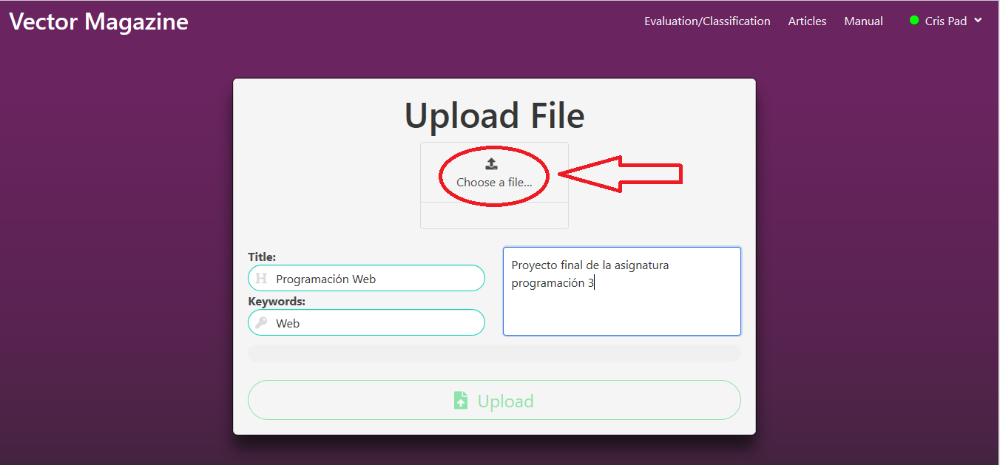
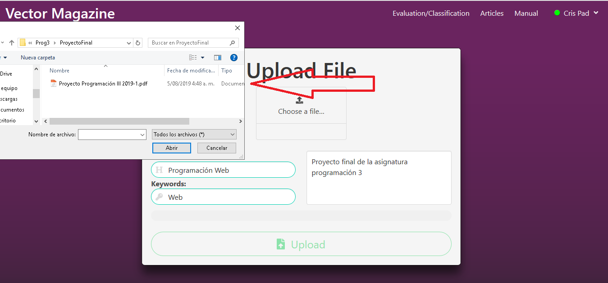
Se confirma el archivo que se desea enviar.
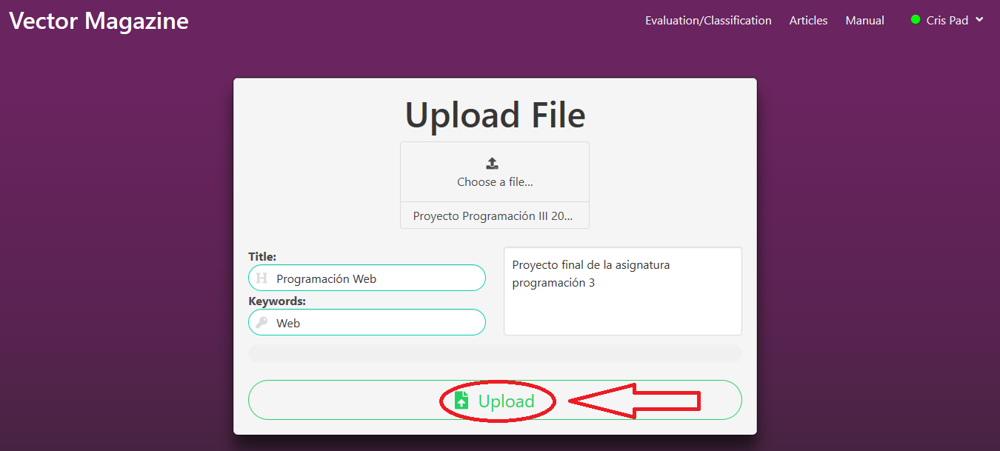
Paso 4: Listar los Artículos
El sistema posee la opción de “List” que nos permite observar que se encuentran cargados en el sistema.
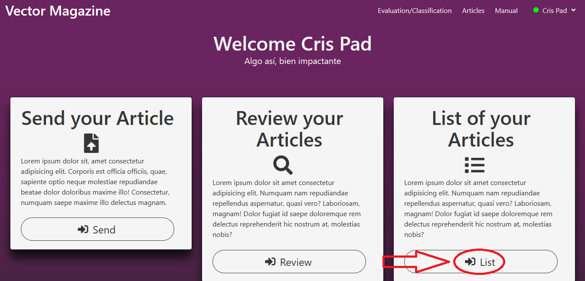
Ingresando en “List” observamos como se listan los diferentes artículos que posee el autor cargado en
su cuenta de sistema
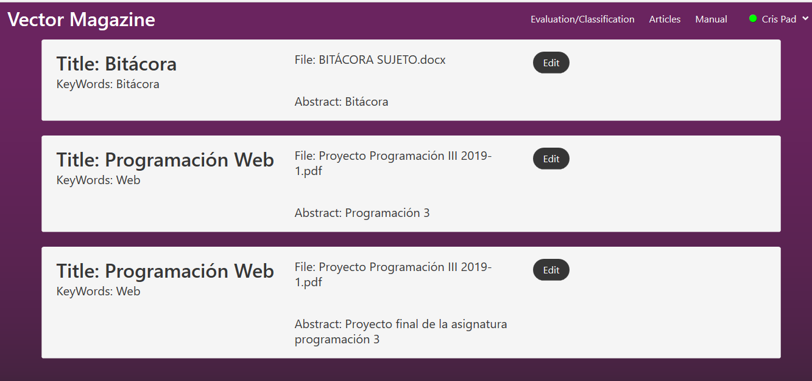
Paso 5: Cerrar sesión
Al culminar todas tus labores y registros, se procederá a cerrar sesión con la opción “Logout”
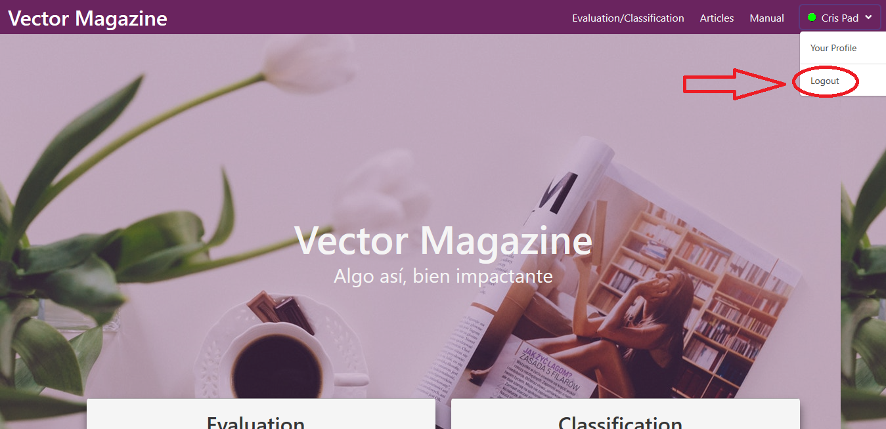